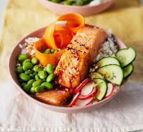

Salmon teriyaki rice bowl
Home
Gloriously sticky teriyaki salmon, perched on a bowl of seasoned sushi rice with fresh edamame beans and creamy avocado.

Tasty and nutritious... one for any time of day
Ingredients
- 200 g sushi rice
- 3 tbsp rice vinegar
- 1 tsp caster sugar
- pinch salt
- 30ml maple syrup
- 1 tsp sesame oil
- 2 tsp tamari soy sauce
- garlic granules
- 1 tsp mirin
- 2 salmon fillets
- sesame seeds
- 2 spring onions
- 150g edamame beans
- half avocado
Steps (Serves 2):
- Cook the sushi rice according to the packet instructions and while it is cooking prepare the sushi rice dressing.
- To do this, mix the rice vinegar, sugar and salt together in a small dish, stirring well until the sugar and salt have dissolved in the vinegar.
- When the rice is cooked, pour the dressing over the top (while it is still hot) and then stir to coat the rice and fluff it up.
- Lightly toast the sesame seeds, scatter them over the rice and stir through. Set the rice aside (still in the saucepan) to cool slightly.
- Prepare and then set the followign three elements aside while you prepare the sushi bowl base:
- Salmon fillets: remove the skin and chop into chunks
- Spring onions: dice to prefered size
- For the teriyaki marinade: mix the maple syrup, sesame oil, tamari, garlic granules and mirin together in a small dish
- Split the rice between two wide bowls so that two-thirds of each base is covered. In the remaining third, pile edamame beans and sliced avocado.
- Pour the marinade into a small frying pan over a high heat. When it begins to bubble, turn the heat down to simmering and stir it constantly until it has reduced, turning from watery sauce to a thicker, glaze consistency
- Add the chunks of salmon to the pan and turn the heat back up to high - stir so that the salmon is fully coated in the glaze and then sprinkle the spring onions over the top
- Continue to cook on a high heat for a couple of minutes, stirring occasionally, until the salmon is glazed and cooked to your preferred level
- Remove from the pan and scoop the teriyaki salmon and spring onions onto the sushi bowls
Voila, one scrumptious meal! Serve with extra soy sauce on the side if you wish.